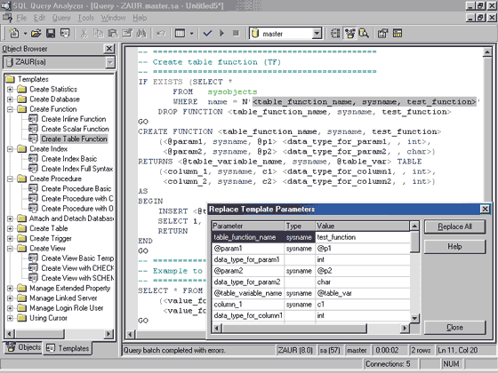

Леонид Кожинский, kolebor@mail.ru
Заур Нуралиев, ZaurN@fininfor.ru
Новая версия СУБД Microsoft SQL Server содержит ряд нововведений, улучшающих ее производительность, масштабируемость, надежность. В SQL Server 2000 решен ряд проблем, возникавших при работе с предыдущими версиями, добавлена более тесная интеграция с Интернетом. На сегодняшний день по тестам TPC-С Microsoft SQL Server 2000 - лучшая по производительности реляционная база данных. В данной статье мы попытаемся описать возможности новой версии.
Производительность, масштабируемость, надежность
Горизонтальное секционирование таблиц
Горизонтальное секционирование таблиц (horizontal partitioning) - один из самых простых способов улучшить производительность базы данных. Основная идея состоит в том, чтобы разделить одну большую таблицу по некоторому критерию на несколько меньших. Во многих случаях Microsoft SQL Server 2000 выполняет запросы к секционированным таблицам параллельно. Получившиеся таблицы-секции можно расположить на разных дисках и/или серверах. Таким образом, горизонтальное секционирование таблиц позволяет улучшить производительность за счет:
- обработки меньшего числа записей;
- перераспределения и параллельного выполнения операций ввода-вывода;
- параллельной обработки запросов на нескольких процессорах;
- параллельного выполнения запроса на нескольких серверах.
При горизонтальном секционировании значительно улучшается и масштабируемость. Если в какой-то момент производительность системы перестала вас удовлетворять, можно просто добавить еще один сервер и/или разбить таблицу на меньшие по объему.
Применение горизонтального секционирования не требует никаких изменений в коде программ. С точки зрения разработчика таблица по-прежнему одна. Пример использования этого подхода* приведен в скриптах 1.1 - 1.5 и на рис. 1. Скрипты 1.1 - 1.3 создают базы данных и таблицы на Server1, Server2, Server3 соответственно. Скрипт 1.4 создает распределенное обновляемое представление на Server1. Именно это представление играет роль таблицы с точки зрения разработчика. Скрипт 1.5 вставляет тестовые данные.
*Здесь предполагается, что Server2 и Server3 присоединены к Server1 как linked servers. Если у вас нет трех компьютеров, то можно установить на одном компьютере три экземпляра SQL Server 2000, создав для них псевдонимы (aliases) c помощью Client Network Utility. К сожалению, если использовать linked servers для распределения таблиц по серверам, присоединяемый сервер не может быть тем же самым - при этом возникает ошибка MS DTC.
Скрипт 1.1. Создание базы данных и таблицы на Server1
--Создание базы данных CREATE DATABASE SampleDB go --Создание таблицы-секции USE SampleDB Go CREATE TABLE SampleTablePartition1( column1 int primary key check(column1 between 1 and 1000 ), column2 varchar(128), column3 datetime ) GO |
Скрипт 1.2. Создание базы данных и таблицы на Server2
--Создание базы данных CREATE DATABASE SampleDB go --Создание таблицы-секции USE SampleDB Go CREATE TABLE SampleTablePartition2( column1 int primary key check(column1 between 1001 and 2000 ), column2 varchar(128), column3 datetime ) GO |
Скрипт 1.3. Создание базы данных и таблицы на Server3
--Создание базы данных CREATE DATABASE SampleDB go --Создание таблицы-секции USE SampleDB Go CREATE TABLE SampleTablePartition3( column1 int primary key check(column1>2000), column2 varchar(128), column3 datetime ) GO |
Скрипт 1.4. Создание обновляемого распределенного представления.
--Создание распределенного обновляемого представления. use SampleDB go CREATE VIEW SampleTable AS select column1,column2,column3 from SampleTablePartition1 union all select column1,column2,column3 from Server2.SampleDB.dbo.SampleTablePartition2 union all select column1,column2,column3 from Server3.SampleDB.dbo.SampleTablePartition3 go |
Скрипт 1.5. Вставка тестовых данных (выполняется на Server1)
set xact_abort on insert into SampleTable(column1,column2,column3) values(1,'First Partition',getdate()) insert into SampleTable(column1,column2,column3) values(1001,'First Partition',getdate()) insert into SampleTable(column1,column2,column3) values(2001,'Third Partition',getdate()) go |
На рис. 1 показан пример запроса к распределенному обновляемому представлению. Обратите внимание на то, что показанный план изменения запроса параметризован и исполняется не полностью. Реально исполняться будет только выделенная красным его часть. Для выполнения подобных запросов SQL Server 2000 использует MS DTС (Distributed Transaction Coordinator), который реализует протокол двухфазной фиксации транзакций.
| Рис. 1. План выполнения для запроса SELECT column1, column2, column3 FROM SampleTable WHERE column1<500.
|
Log Shipping - недорогая альтернатива кластеру
Log shipping - это новая* возможность SQL 2000 Enterprise Edition, позволяющая регулярно копировать журнал транзакций и восстанавливать его на другом сервере. Это позволяет, во-первых, при отказе основного сервера использовать резервный сервер, а во-вторых, перенести на другие сервера нагрузку, связанную с запросами на чтение. После первоначального копирования всей базы данных процесс работы Log Shipping состоит из следующих этапов:
- резервное копирование журнала транзакций на жесткий диск основного сервера;
- копирование полученного файла с основного сервера на резервный сервер;
- восстановление журнала транзакций на резервном сервере.
*Возможность Log Shipping существовала и раньше. Впервые она появилась в Microsoft BackOffice 4.5 Resource Kit как недокументированная возможность и содержала обновление для sqlmaint.exe, набор скриптов и документацию. В SQL Server 2000 добавился только немного усовершенствованный графический интерфейс. Версию из BORK можно использовать для SQL 7.0.
Несколько серверов на одном компьютере
Microsoft SQL Server 2000 может выполняться на одном компьютере в нескольких экземплярах, каждый из которых абсолютно автономен. Это облегчает миграцию с предыдущей версии - теперь ее можно проводить поэтапно, конвертируя базы данных поочередно. Далее, это обеспечивает более рациональное использование мощности серверов. Один и тот же компьютер может одновременно работать с SQL Server 7.0 и SQL Server 2000. Если у вас есть несколько программ с несовместимыми настройками уровня сервера, то SQL Server 2000 позволяет избежать выделения отдельных серверов под каждую задачу.
Один из экземпляров называется экземпляром по умолчанию (Default instance), а остальные - именованными экземплярами (Named instance). Имена в SQL Server даются в виде Server\InstanceName. Если программа по каким-либо причинам не может поддерживать имя сервера в виде Server\InstanceName, то эта проблема решается с помощью создания псевдонимов (aliases) в Client Network Utility.
Новые возможности для программистов
Пользовательские функции
В SQL Server 2000 появились пользовательские функции (user-defined functions), которые можно использовать в операторах Select, Update, Insert, Delete и при создании вычисляемых полей. Пользовательские функции дают следующие преимущества:
- упрощают код - можно запрограммировать часто используемые сложные выражения в виде функций;
- реже используются временные таблицы, в ряде случаев их можно заменить пользовательскими функциями;
- их можно использовать в вычисляемых полях, с последующим построением индекса. Подробно эта возможность описана в разделе "Индексирование вычисляемых полей".
Функции условно можно разделить на те, которые возвращают скалярное значение (скрипт 2.1), и те, которые возвращают таблицу. Функции могут возвращать единственное значение, таблицу или переменную типа table (скрипт 2.2).
Скрипт 2.1. Пример скалярной функции
--Создаем скалярную функцию USE pubs GO CREATE FUNCTION dbo.GetFullName(@au_fname varchar(20), @au_lname varchar(40)) RETURNS varchar(60) WITH SCHEMABINDING AS BEGIN RETURN @au_fname+' '+@au_lname END GO --Проверяем работоспособность созданной функции SELECT au_fname,au_lname,dbo.GetFullName(au_fname,au_lname) FROM authors |
Скрипт 2.2. Примеры табличных функций
USE pubs
GO
--Создаем функцию, возвращающую набор записей с помощью одного
--оператора SELECT
CREATE FUNCTION dbo.GetListOfAuthors(@pub_id varchar(11))
RETURNS TABLE
WITH SCHEMABINDING
AS RETURN (
SELECT authors.au_id, authors.au_fname, authors.au_lname
FROM dbo.titles titles join dbo.titleauthor titleauthor on
titleauthor.title_id=titles.title_id
join dbo.authors authors on authors.au_id=titleauthor.au_id
)
GO
--Проверяем работоспособность созданной функции
select * from dbo.GetListOfAuthors('0736') authors
GO
--Создаем функцию, возвращающую переменную типа table
CREATE FUNCTION dbo.GetAuthorAdvances(@pub_id [id])
RETURNS @Results TABLE (
au_id varchar(11) COLLATE
SQL_Latin1_General_CP1251_CI_AS,
/* Сравниваемые колонки должны иметь тот же collation, */
/* Ниже мы будем сравнивать этот au_id и authors.au_id */
max_advance money, /* Максимальный аванс для автора */
highest_advance money /* Разница между самым большим */
/* авансом и максимальным авансом */
/* для автора */
)
AS
BEGIN
Declare @highest_advance money
INSERT INTO @Results(au_id,max_advance,highest_advance)
SELECT au_id, max(advance),0
FROM titleauthor join titles on titles.title_id=
titles.title_id
WHERE pub_id=@pub_id
GROUP BY au_id
SELECT @highest_advance=max(max_advance)
FROM @Results
UPDATE @Results set highest_advance=@highest_advance
RETURN
END
GO
--Проверяем работоспособность созданной функции
select au_fname,au_lname,max_advance, highest_advance
from dbo.GetAuthorAdvances('0736') advances join authors on
authors.au_id=advances.au_id
GO
|
В некоторых случаях функцию можно использовать для обновления (скрипт 2.3).
Скрипт 2.3. Пример обновления набора записей, возвращаемых функцией
--Пример использования функции для обновления/удаления UPDATE dbo.GetListOfAuthors SET au_fname='Tanya' WHERE au_fname='Anne' |
Индексирование вычисляемых полей
Индексирование результатов работы функции возможно только для детерминированных функций (deterministic functions). Детерминированными называют функции, возвращающие одинаковый результат при одинаковых входных параметрах. В понятие детерминированности также входит:
- отсутствие вызовов недетерминированных пользовательских функций;
- отсутствие обращений к объектам, находящимся вне области видимости данной функции;
- отсутствие обращений к расширенным хранимым процедурам;
- наличие в теле функции конструкции WITH SCHEMABINDING.
Скрипт 2.4 иллюстрирует применение пользовательской функции для создания вычисляемого поля с последующим созданием индекса. Обратите внимание на план запроса, который использует созданный индекс, вместо того чтобы полностью сканировать таблицу (рис. 2).
Скрипт 2.4. Применение пользовательской функции для создания индекса
--Создание вычисляемого поля USE pubs GO ALTER TABLE AUTHORS ADD full_name AS dbo.GetFullName(au_fname,au_lname) GO --Создание индекса по вычислимому полю CREATE INDEX ixAuthors ON authors(full_name) GO --Запрос использующий созданный индекс SELECT * FROM authors WHERE full_name='Dean Straight' |
| Рис. 2. Использование индекса по вычисляемому полю.
|
Индексированные представления
Индексированные представления (Indexed Views) позволяют хранить и поддерживать результаты запросов. Эта возможность важна для DSS-приложений, часто выполняющих сложные запросы с большим количеством соединений, агрегатных функций и других трудоемких вычислений. По оценкам Microsoft, правильное использование индексированных представлений позволяет увеличить производительность некоторых операций в 10-100 раз. Индексированные представления можно использовать без переработки существующего кода. Оптимизатор запросов SQL Server может прибегать к полезным в данном случае индексированным представлениям, даже если в запросе они не упоминаются.
Триггеры INSTEAD OF
Новый вид триггеров, появившийся в SQL Server 2000, позволяет перераспределить логику программирования баз данных. Операции, выполнявшиеся в предыдущей версии с помощью хранимых процедур, в SQL Server 2000 могут быть реализованы триггерами INSTEAD OF. Эти триггеры создаются для представлений и таблиц. Большую часть логики баз данных можно запрограммировать в виде набора ненормализованных объектов предметной области (представлений) и простых операций над ними. При этом за каждой из таких операций может стоять код любой сложности, выполняемый триггером INSTEAD OF. Подобная логика уменьшает сложность кода - при таком программировании клиент базы данных всегда имеет дело с одной из нескольких таблиц. Кроме того, она облегчает работу с множествами записей. Примером может служить вставка нескольких записей, данные которых требуется сохранить в нескольких таблицах. В SQL Server 7.0 эта задача решалась с помощью курсоров и/или временных таблиц и хранимых процедур. Теперь ее можно решить с помощью триггера INSTEAD OF и простого оператора INSERT. Пример использования триггера INSTEAD OF приведен в скрипте 2.6.
Скрипт 2.6. Использование триггера INSTEAD OF
--Создание таблицы групп
CREATE TABLE Groups(
group_id int identity(1,1) primary key,
group_name varchar(80)
)
GO
--Создание зависимой таблицы элементов групп
CREATE TABLE Items(
item_id int identity(1,1) primary key,
group_id int FOREIGN KEY REFERENCES Groups(group_id),
item_name varchar(80)
)
GO
--Создание представления
CREATE VIEW ItemsOfGroups
WITH SCHEMABINDING
AS
SELECT group_name,item_name
FROM dbo.Groups join dbo.Items on groups.group_id=items.item_id
GO
--Создание триггера на вставку данных
CREATE TRIGGER ItemsOfGroupsInsert
ON dbo.ItemsOfGroups
INSTEAD OF INSERT
AS
BEGIN
INSERT INTO Groups(group_name)
SELECT Inserted.group_name FROM Inserted left join Groups on
Groups.group_name=Inserted.group_name
WHERE Groups.group_id Is Null
INSERT INTO Items(group_id,item_name)
SELECT group_id,item_name
FROM Inserted join Groups on Groups.group_name=
Inserted.group_name
END
GO
--Пример вставки данных
INSERT INTO ItemsOfGroups(group_name,item_name) VALUES
('Группа 1','Элемент 1')
GO
|
Каскадные операции
Возможность каскадного удаления/обновления реализована в Microsoft SQL Server 2000 с помощью внешних ключей. Для этого при создании внешнего ключа указывается конструкция ON DELETE/UPDATE.(скрипт 2.7.)
Скрипт 2.7. Каскадное удаление/обновление
--Создание таблицы CREATE TABLE primary_table ( primary_table_id int PRIMARY KEY, column1 varchar(80) ) GO --Создание зависимой таблицы CREATE TABLE dependant_table ( dependant_table_id int PRIMARY KEY, primary_table_id int FOREIGN KEY REFERENCES primary_table(primary_table_id) ON DELETE CASCADE, column2 varchar(80) ) --Заполнение таблиц тестовыми данными INSERT INTO primary_table(primary_table_id,column1) VALUES(1,'Name 1') INSERT INTO dependant_table(dependant_table_id, primary_table_id,column2) VALUES(1,1,'Name 1') GO --Следующий оператор иллюстрирует каскадное удаление DELETE primary_table WHERE primary_table_id=1 GO |
Новые типы данных
Новый тип данных table, появившийся в SQL Server 2000, можно использовать почти везде, где ранее использовались временные таблицы. Отличие состоит в области видимости. Переменные типа table предпочтительнее, так как область их действия четко ограничена функцией, хранимой процедурой либо набором команд, что позволяет в некоторых случаях избежать перекомпиляции. Пример использования переменной данного типа приведен в скрипте 2.8.
Скрипт 2.8. Использование типа данных table
--Объявление ние переменной типа "таблица" DECLARE @table_variable Table(field1 int, field2 char(3)) --Возможные варианты использования переменной INSERT INTO @table_variable VALUES (1, 'ISO') UPDATE @table_variable SET field1 = 2, field2 = 'TSO' SELECT * FROM @table_variable DELETE FROM @table_variable |
Тип данных sql_variant позволяет хранить значения всех возможных типов, которые поддерживает SQL Server 2000, кроме text, ntext, image, timestamp, sql_variant, table. При работе с sql_variant нужно помнить о базовом типе данных. Для устранения возможных проблем при работе с sql_variant рекомендуется выполнять явное приведение типов с помощью функций CAST или CONVERT. Скрипт 2.9 содержит примеры корректного и некорректного сравнения переменных типа sql_variant.
Скрипт 2.9. Пример использования переменных типа sql_variant
--Объявление переменных
Declare @int_1 int,
@char_1 char(3),
@var_1 sql_variant,
@var_2 sql_variant
--Присвоение значений
Select @int_1 = 1 , @char_1 = 1
Select @var_1 = @int_1, @var_2 = @char_1
-- 1 не равно '1'
If (@var_1 != @var_2)
Print 'Значения не равны !'
-- 1 равно '1'
If Ltrim(Rtrim(Cast(@var_1 as varchar))) = Ltrim(Rtrim(Cast
(@var_2 as varchar)))
Print 'Значения равны !'
|
Тип данных bigint используется тогда, когда значения выходят из диапазона, поддерживаемого типом int. При работе с bigint вместо @@ROWCOUNT и COUNT() следует использовать функции @@ROWCOUNT_BIG и COUNT_BIG().
Поддержка XML
Microsoft SQL Server 2000 содержит ряд средств, облегчающих работу с XML. Условно их можно разделить на следующие группы:
- новые функции СУБД;
- дополнительные библиотеки для IIS;
- изменения провайдера SQLOLEDB и объектов ADODB.
XML внутри СУБД
Реляционная часть SQL Server 2000 поддерживает две способа работы с XML: возврат результата запроса в виде XML и разбор XML-документов внутри СУБД. Разобранный документ может использоваться оператором SELECT как любая другая таблица.
Чтобы вернуть результат запроса в виде XML, используется конструкция SELECT ... FOR XML; пример ее использования показан на рис. 3.
| Рис. 3. Выполнение SQL-запроса из строки браузера.
|
Для разбора XML-документов SQL Server 2000 предлагает следующие функции:
- sp_xml_preparedocument. Эта хранимая процедура разбирает указанный текст, сохраняет его в кэше SQL Server'а и возвращает контекст документа в кэше.
- OPENXML позволяет представить разобранный документ в виде таблицы. Вид таблицы
определяется параметрами OPENXML. При этом есть два основных представления:
а) каждый элемент и/или атрибут вместе с метаданными представляется как один ряд в таблице;
б) с помощью XPath разработчик устанавливает соответствие между получаемыми колонками и атрибутами исходного документа. - sp_xml_removedocument. Эта хранимая процедура удаляет документ из кэша SQL Server'а
Скрипт 3.1, содержащий пример разбора XML-документа, и листинг, содержащий результат выполнения этого скрипта,. демонстрируют разбор XML-документа в СУБД.
Скрипт 3.1. Запрос к XML-документу
DECLARE @idoc int
DECLARE @doc varchar(1000)
SET @doc ='
<ROOT>
<authors au_lname="Carson" au_fname="Cheryl">
<titles title="But Is It User Friendly?" />
</authors>
<authors au_lname="MacFeather" au_fname="Stearns">
<titles title="Computer Phobic AND Non-Phobic Individuals:
Behavior Variations" />
</authors>
</ROOT>'
EXEC sp_xml_preparedocument @idoc OUTPUT, @doc
SELECT *
FROM OPENXML(@idoc, '/ROOT/authors/titles')
WITH(
au_lname varchar(20) '../@au_lname',
au_fname varchar(20) '../@au_fname' ,
title varchar(20) '@title'
)
EXEC sp_xml_removedocument @idoc
|
Листинг 3.1. Результаты выполнения скрипта 3.1
au_lname au_fname title ---------------------------------------- -------------------- Carson Cheryl But Is It User Frien MacFeather Stearns Computer Phobic AND (2 row(s) affected) |
XML на IIS
SQL Server 2000 содержит ISAPI* библиотеку SQLISAPI для Microsoft IIS. Эта библиотека использует провайдер SQLOLEDB и библиотеку SQLXML для возврата Web-браузеру XML или HTML. По умолчанию результат возвращается в виде XML. Разработчик может указывать имя XSL-файла либо в самом XML-документе, либо в строке URL (XSL используется для преобразования XML в HTML).
Этот набор библиотек поддерживает возврат XML/HTML с помощью:
- динамических запросов к базе данных через HTTP;
- шаблонов запросов к базе данных;
- XDR (XML Data Reduced) и Хpath-запросов к этим схемам.
*Библиотеки ISAPI используются для обработки документов в виртуальных каталогах. Для каждого виртуального каталога IIS поддерживает список соответствий между типами файлов и ISAPI-библиотеками, которые используются для их обработки.
Динамические запросы через протокол HTTP - это самая простая возможность получить информацию из базы данных в виде XML. В строке запроса можно использовать конструкцию SELECT ... FOR XML либо вызвать хранимую процедуру, содержащую данную конструкцию. Поддерживается и метод POST, что позволяет убрать запрос к базе данных в hidden-поля HTML-формы. На рис. 3 показан результат выполнения динамического запроса к базе данных.
Хранить запросы к базе данных в HTML-файлах не всегда удобно, поэтому Microsoft предлагает хранить их в шаблонах. Шаблоны представляют собой XML-документы, состоящие из необязательного списка параметров и набора SQL-команд (листинг 3.2 содержит подобный шаблон). Как видно из текста шаблона, он обрабатывается с помощью XSL (листинг 3.3.) В результате в Web-браузер возвращается HTML-документ, показанный на рис. 4.
Листинг 3.2. Шаблон запроса к базе данных
<ROOT xmlns:sql="urn:schemas-microsoft-com:xml-sql"
sql:xsl='template_sample.xsl'>
<sql:header>
<sql:param name='city'>Oakland</sql:param>
</sql:header>
<sql:query>
SELECT au_fname as [first-name],
au_lname as [last-name],
city
FROM Authors
WHERE CITY=@city
FOR XML AUTO
</sql:query>
</ROOT>
|
Листинг 3.3. XSL-файл для преобразования результатов в HTML
<xsl:stylesheet xmlns:xsl="http://www.w3.org/1999/
XSL/Transform" version="1.0">
<xsl:output media-type="text/html" type="text"/>
<xsl:template match = '*'>
<xsl:apply-templates />
</xsl:template>
<xsl:template match = 'Authors'>
<TR>
<TD><xsl:value-of select = '@first-name' /></TD>
<TD><xsl:value-of select = '@last-name' /></TD>
<TD><xsl:value-of select = '@city' /></TD>
</TR>
</xsl:template>
<xsl:template match = '/'>
<HTML>
<HEAD>
</HEAD>
<BODY>
<TABLE border='1'>
<TR><TH colspan='3'>List Of Authors </TH></TR>
<TR>
<TH><B>First Name</B></TH>
<TH><B>Last Name</B></TH>
<TH><B>City</B></TH>
</TR>
<xsl:apply-templates select = 'ROOT' />
</TABLE>
</BODY>
</HTML>
</xsl:template>
</xsl:stylesheet>
|
| Рис. 4. Результат выполнения шаблона запроса из листинга 3.2 после применения XSL из листинга 3.3.
|
XDR-схемы обеспечивают трансляцию XPath-запросов в Transact SQL. По сути XDR-схемы - это XML-представления, описывающие соответствия между реляционными объектами и элементами/атрибутами элементов XML-документа. Результат, приведенный на рис. 4, можно получить с помощью XDR-схемы (листинг 3.4) и шаблона, содержащего Xрath-запрос (листинг 3.5) Полученный XML обрабатывается с помощью XSL (см. листинг 3.3) и возвращает те же результаты (рис. 5.)
Листинг 3.4. Пример XDR-схемы
<?xml version="1.0" ?>
<Schema xmlns="urn:schemas-microsoft-com:xml-data"
xmlns:dt="urn:schemas-microsoft-com:datatypes"
xmlns:sql="urn:schemas-microsoft-com:xml-sql">
<ElementType name="Authors" sql:relation="authors" >
<AttributeType name="first-name" />
<AttributeType name="last-name" />
<AttributeType name="city" />
<attribute type="first-name" sql:field="au_fname" />
<attribute type="last-name" sql:field="au_lname" />
<attribute type="city" sql:field="city" />
</ElementType>
</Schema>
|
Листинг 3.5. Пример Xpath-запроса к XDR-схеме
<ROOT xmlns:sql="urn:schemas-microsoft-com:xml-sql"
sql:xsl='template_sample.xsl'>
<sql:header>
<sql:param name='city'>Oakland</sql:param>
</sql:header>
<sql:xpath-query mapping-schema="../schema/schema_sample.xml">
Authors[@city=$city]
</sql:xpath-query>
|
| Рис. 5. Результат выполнения XDR-схемы (листинг 3.3). и XРath-запроса (листинг 3.5).
|
Для настройки всех вышеописанных возможностей используется MMC snap-in "Configure SQL XML Support in IIS".
Microsoft ActiveX Data Objects 2.6
Новая версия ADODB поддерживает возврат результатов запроса в виде XML. Для этого используется объект типа Stream, в экземпляр которого возвращается результат запроса. В дальнейшем полученные данные могут передаваться клиенту в виде XML или обрабатываться с помощью XSL. Кроме того, ADODB поддерживает запросы в виде XML-шаблонов, а также XDR-схемы и ХРath-запросы к этим схемам.
Другие нововведения
В число других преимуществ Microsoft SQL Server 2000 по сравнению с SQL Server 7.0 входят:
- улучшенная работа с кластерами;
- больший поддерживаемый объем оперативной памяти (до 64 Гбайт);
- поддержка протокола защиты Kerberos;
- языковые настройки на уровне каждой базы данных и даже конкретной колонки (а не на уровне сервера);
- улучшенное хранение текста. В SQL Server 2000 небольшие объемы данных типов text, ntext, image хранятся на страницах самой таблицы. Это увеличивает производительность и сокращает использование дискового пространства;
- возможность создания индекса с указанием направления сортировки данных;
- улучшенная репликация;
- параллельное выполнение отдельных административных операций, таких как функции DBCC или создание индекса.
Улучшения графического интерфейса
В Microsoft SQL Server 2000 добавлен ряд новых возможностей в SQL Query Analyzer, облегчающих работу программиста. Появилась возможность интерактивной отладки хранимых процедур. Добавлено окно Object Browser, облегчающее доступ к информации об объектах базы данных. SQL Query Analyzer поддерживает создание скриптов для выполнения операций DDL и DML. Особенно полезна возможность генерации кода для запуска хранимой процедуры (рис. 6).
| Рис. 6. Пример генерации кода для выполнения хранимой процедуры.
|
SQL Query Analyzer также поддерживает расширяемый набор шаблонов. Шаблоны содержат параметры, которые можно заменить с помощью графического интерфейса (рис. 7). Предлагаемые нововведения значительно сокращают объем рутинной работы.
|  |
| Рис. 7. Замена параметров шаблона.
|